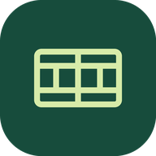

نصب باشگاه تنیس سام
نمونهٔ باشگاه را از صفحهٔ اصلی دستگاه باز کنید.
iPhone و iPad
در Safari از منوی اشتراکگذاری گزینهٔ «افزودن به صفحهٔ اصلی» را انتخاب کنید.
Android
در Chrome از منوی مرورگر «نصب برنامه» یا «افزودن به صفحهٔ اصلی» را انتخاب کنید.
Mac و رایانه
در Safari مک از منوی File گزینهٔ Add to Dock را انتخاب کنید. در Chrome و Edge از گزینهٔ نصب کنار نوار آدرس استفاده کنید.